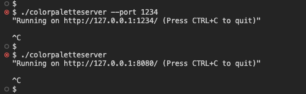

RESTful Color Palette Server
Example of how to create a RESTful API server using the QHttpServer.

This example shows how to set up a RESTful API server using the QHttpServer class. The example is based on Reqres API. The Color Palette API allows create, read, update and delete operations of colors (unknown resource to be compatible with Reqres API) and users. API also provides login/logout functionality.
To run the server application, execute server binary:
./colorpaletteserver
or
./colorpaletteserver --port 1234
An optional port parameter may be provided to specify the port on which the server shall run.
httpServer.route( QString("%1").arg(apiPath), QHttpServerRequest::Method::Get, [&api](const QHttpServerRequest &request) { return api.getPaginatedList(request); });
In the example above, the route is specified for the GET method, which returns the JSON array with paginated list of items stored. To achieve that, the QHttpServer::route() method is used with the QHttpServerRequest::Method::Get enumeration.
httpServer.route(QString("%1/<arg>").arg(apiPath), QHttpServerRequest::Method::Get, [&api](qint64 itemId) { return api.getItem(itemId); });
To get a single item from the list of entities, the item ID is passed in the request query.
httpServer.route(QString("%1").arg(apiPath), QHttpServerRequest::Method::Post, [&api, &sessionApi](const QHttpServerRequest &request) { if (!sessionApi.authorize(request)) { return QHttpServerResponse( QHttpServerResponder::StatusCode::Unauthorized); } return api.postItem(request); });
In this example, the route accepts POST method, which adds a new entry to the item list and returns a JSON object that represents the added entry. This request must be authorized. To authorize the request the value of the header TOKEN must be equal to previously returned token from the api/login or the api/register methods.
QHttpServerResponse postItem(const QHttpServerRequest &request) { const std::optional<QJsonObject> json = byteArrayToJsonObject(request.body()); if (!json) return QHttpServerResponse(QHttpServerResponder::StatusCode::BadRequest); const std::optional<T> item = factory->fromJson(*json); if (!item) return QHttpServerResponse(QHttpServerResponder::StatusCode::BadRequest); if (data.contains(item->id)) return QHttpServerResponse(QHttpServerResponder::StatusCode::AlreadyReported); const auto entry = data.insert(item->id, *item); return QHttpServerResponse(entry->toJson(), QHttpServerResponder::StatusCode::Created); }
Besides new entry as JSON object POST methods returns also different HTTP status code: Created for new entries, or AlreadyReported for pre-existing entries. This example makes use of an overload of QHttpServerResponse::QHttpServerResponse to send a JSON object and corresponding HTTP status code.
To create an entry, the request body must be a JSON object with email first_name last_name and avatar fields - to create new users. For example:
{
"email": "jane.doe@qt.io",
"first_name": "Jane",
"last_name": "Doe",
"avatar": "/img/faces/1-image.jpg"
}
Files:
- colorpalette/CMakeLists.txt
- colorpalette/apibehavior.h
- colorpalette/colorpalette.pro
- colorpalette/main.cpp
- colorpalette/types.h
- colorpalette/utils.h
Images:
- colorpalette/assets/img/1-image.jpg
- colorpalette/assets/img/10-image.jpg
- colorpalette/assets/img/11-image.jpg
- colorpalette/assets/img/12-image.jpg
- colorpalette/assets/img/2-image.jpg
- colorpalette/assets/img/3-image.jpg
- colorpalette/assets/img/4-image.jpg
- colorpalette/assets/img/5-image.jpg
- colorpalette/assets/img/6-image.jpg
- colorpalette/assets/img/7-image.jpg
- colorpalette/assets/img/8-image.jpg
- colorpalette/assets/img/9-image.jpg
{kind=link}
{kind=link}
{kind=link}
{kind=link}
{kind=link}
{kind=link}
{kind=link}
{kind=link}
{kind=link}
{kind=link}
{kind=link}
{kind=link}